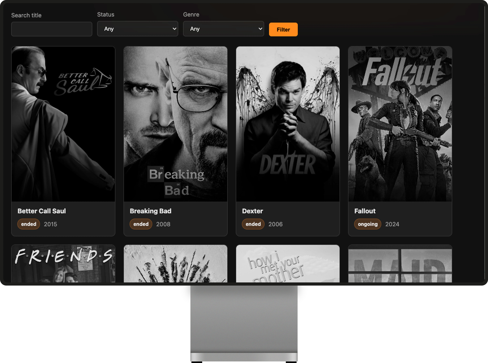
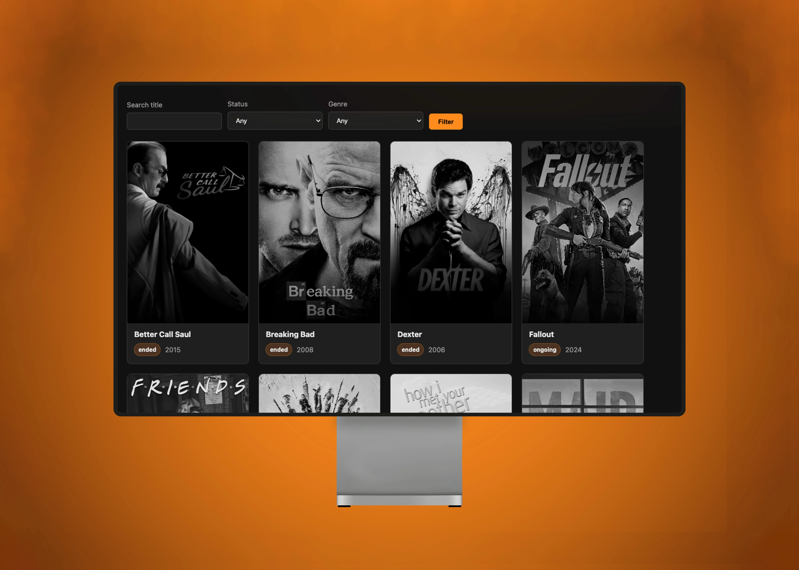
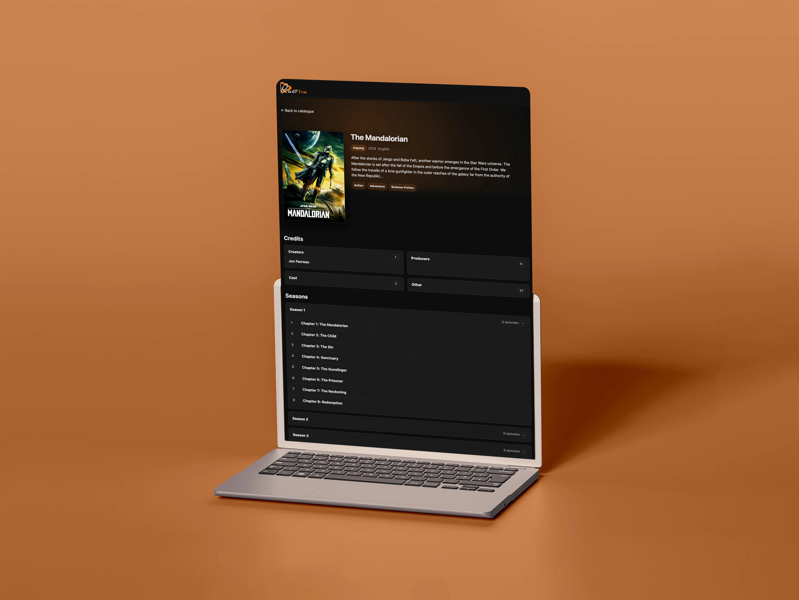
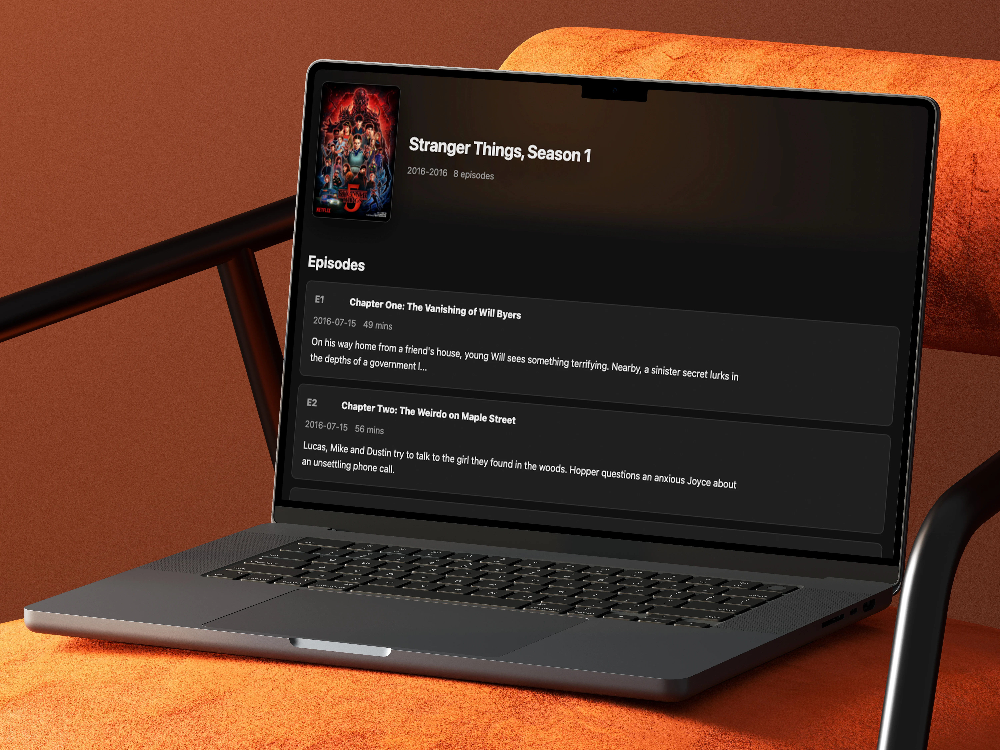
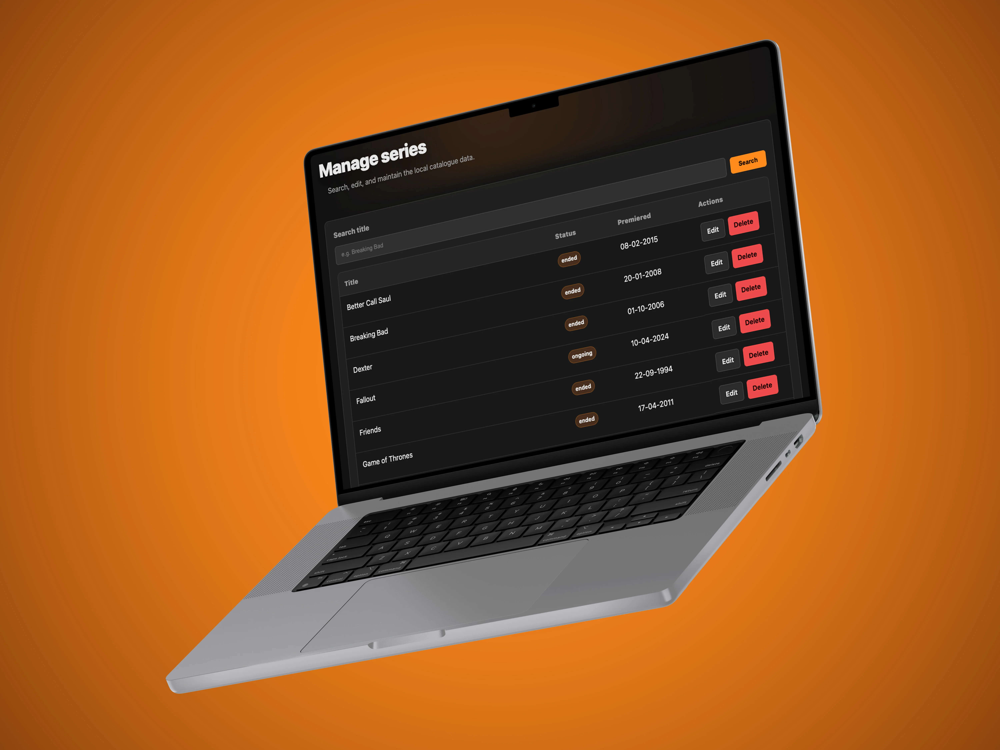
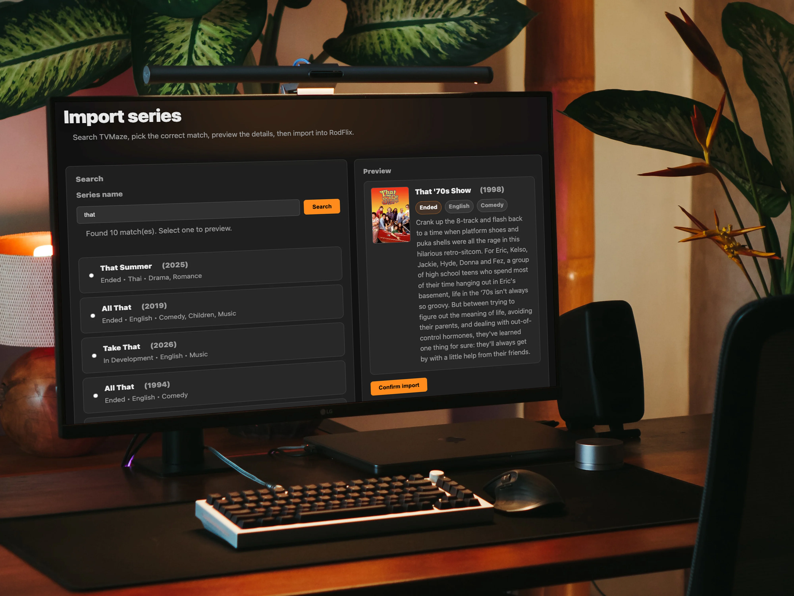

PHP
The engine room. Routing, business logic, rendering, and everything powering the admin side of the application.
EVERY EPISODE STARTS WITH A QUERY
Browse shows, seasons, and episodes through a simple interface while the database quietly does the heavy lifting behind the scenes.
MISSION ACCEPTED
The brief sounded simple enough: build a TV series catalogue backed by a relational database, complete with intuitive navigation and an admin area for managing content.
The "simple" part lasted about five minutes. Soon there were schemas to design, CRUD operations to build, and plenty of opportunities for users to do things I hadn't anticipated.
Looking back, RodFlix wasn't really about TV series. It was about understanding how databases, business logic, and UI work together to create software that feels simple to use.
Search, filter, browse, then forget why you opened the site.

Pragmatic beats unnecessarily clever
Rather than chasing the latest framework, I focused on solid fundamentals: clear responsibilities, relational data, server-side rendering, and an architecture that could grow without becoming difficult to maintain.
The engine room. Routing, business logic, rendering, and everything powering the admin side of the application.
A relational database built around shows, seasons, and episodes connected without relying on crossed fingers.
Populating the catalogue with real-world data, because manually entering hundreds of TV series sounded like a terrible idea.
The part users actually see, designed to stay clean, responsive, and out of the way of the content.
Scroll for the full season.
Swipe cards to explore
Series, seasons, episodes, and related information needed to work together without turning every query into a small tragedy.
The solution wasn't more tables. It was giving each relationship a clear responsibility, making the whole catalogue easier to extend and maintain.
Users shouldn't have to think about everything happening behind the scenes. The interface needed to stay simple, even when the application wasn't.
Predictable layouts, reusable patterns, and clear navigation meant users always knew where they were, without accidentally becoming part of the catalogue themselves.
This was the project where server-side development stopped being a tutorial and started feeling real. Small mistakes had immediate consequences, and fixing them meant understanding the problem rather than searching for another code snippet.
THE DATABASE ALWAYS WINS
Relational databases became something I could design and reason
about, not just query.
FUTURE ME DESERVES BETTER
Keeping the back end and front end readable requires structure,
not optimism.
USERS ARE CREATIVE
Input validation isn't a nice extra.
It's self-defence.





Where browsing begins and productivity quietly ends.
Everything worth knowing before deciding whether to invest the next three weekends.
Every season broken into episodes, because rabbit holes are easier to navigate when they're organised.
Managing the catalogue without opening phpMyAdmin every five minutes.
Because manually typing every series would be a terrible hobby.